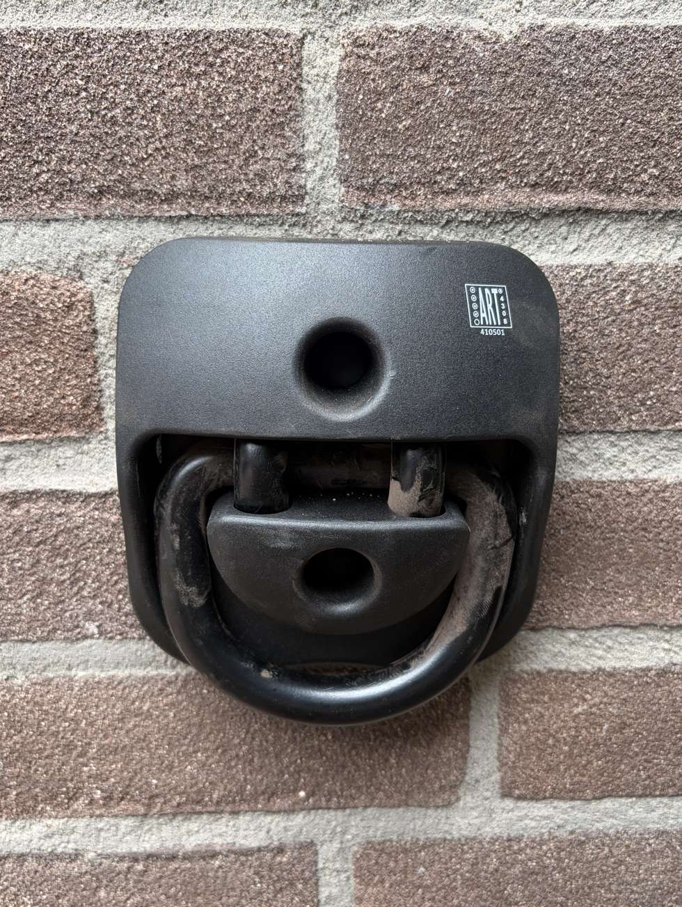

Wat er aan je muur komt
Muuranker, ART-4 goedgekeurd.

ART-4 is de klasse die verzekeraars doorgaans accepteren voor een motor. Voor een fiets is dat ruim overgedimensioneerd, en dat is precies de bedoeling: het anker gaat een keer de muur in en moet daarna nooit meer het probleem zijn. Koop je later een zwaarder slot, dan past dat er gewoon aan.
Het anker is zo sterk als de muur eromheen. Een spreidbout duwt van binnenuit tegen de wand van het boorgat, en in zachte of oude baksteen kan die druk de steen splijten — zeker dicht bij een rand. Op zo'n muur verankeren we chemisch: draadeind in injectiemortel, dat hecht over de hele lengte van het gat in plaats van op een paar drukpunten. Meer werk, maar je betaalt er niets extra voor. Wij bepalen ter plekke wat er nodig is.
- Keurmerk
- ART-4, Stichting ART
- Beugel
- 14 mm gehard staal
- Binnenmaat
- 12 cm
- Gewicht
- 1,4 kg
- Montage
- Muur of vloer
- Bevestiging
- Plaat met vier gaten, mechanisch of chemisch
- Inbegrepen
- Anker, bevestiging, boorwerk, voorrijden
- Werkgebied
- Heel Nederland, overal dezelfde prijs
Wat je eraan hangt
Het slot bepaalt je klasse, niet het anker.
Dit is je thuisketting: hij hangt aan het anker en hoeft nergens heen. Neem dus het zwaarste dat past — gewicht is hier geen bezwaar, want je sjouwt er niet mee. Bestel je er een bij ons, dan hangt hij bij ons vertrek al door het anker en gaan de sleutels door je brievenbus. Wil je je eigen ketting gebruiken? Prima, dan boeken we alleen de montage.
Wat kost het voor jou?
Kies wat je wilt vastzetten en je ziet meteen je prijs per maand.
Kies je voertuig